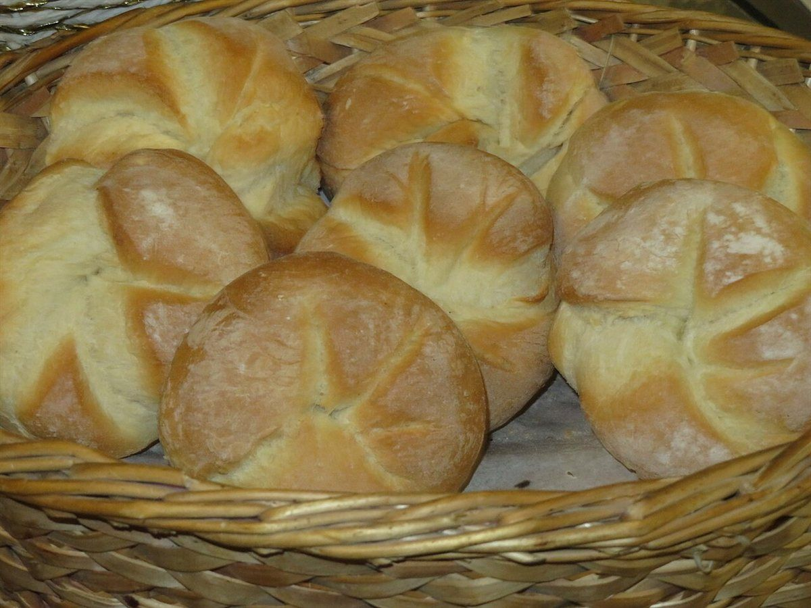
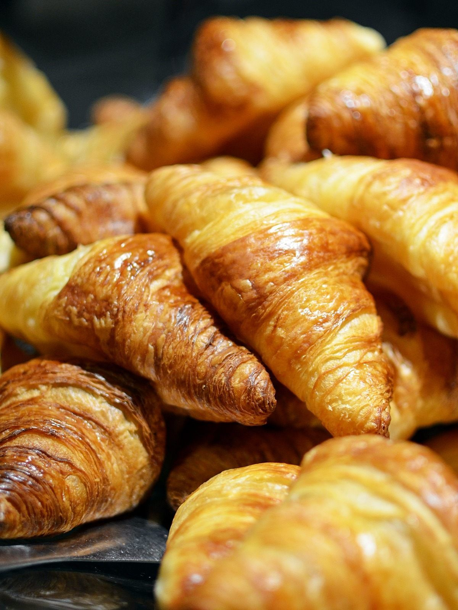

掲載している写真はフリー素材のイメージで、お店の実際の様子ではありません。日本国外や他の地域で撮影されたもの、撮影地が不明なものを含みます。
このサイトのご案内
お店の基本情報
- 屋号
- COCORO Bakery(ココロベーカリー)
- 住所
- 静岡県沼津市東熊堂468-7
- 営業時間
- 準備中(お問い合わせください)
- 定休日
- 準備中(お問い合わせください)


掲載している写真はフリー素材のイメージで、お店の実際の様子ではありません。日本国外や他の地域で撮影されたもの、撮影地が不明なものを含みます。